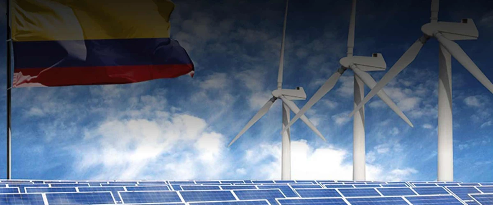
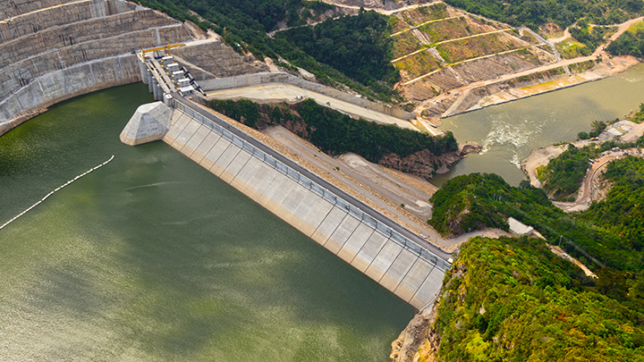
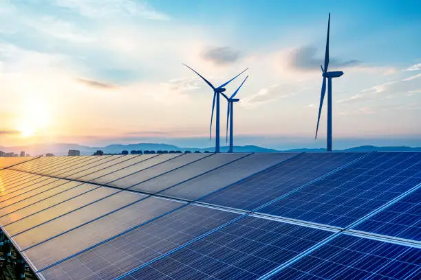
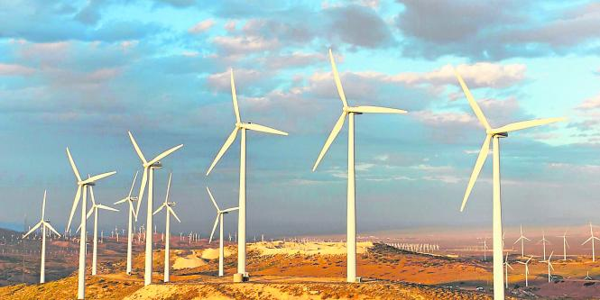

Transición Energética en Colombia
Colombia es uno de los países de América Latina con mayor participación de energías limpias. La hidroeléctrica representa más del 70% de la electricidad generada, mientras que fuentes como la solar y eólica han empezado a crecer en la última década. La meta nacional es diversificar aún más la matriz energética y garantizar una transición justa, sostenible y accesible para todos.
Principales fuentes renovables
Hidroeléctrica
Es la principal fuente de energía en Colombia. Utiliza el flujo del agua para generar electricidad de forma limpia.
Solar
En crecimiento gracias al potencial solar en regiones como La Guajira. Es ideal para comunidades rurales.
Eólica
Se concentra en el norte del país. Colombia busca ampliar esta fuente con parques eólicos nuevos.
Colombia y la Transición Energética Justa
🔋 Situación energética actual
Colombia ha sido históricamente un país con una matriz energética limpia, gracias a su alta dependencia de la hidroelectricidad. Aproximadamente el 70% de la electricidad proviene de fuentes hidroeléctricas. Sin embargo, el cambio climático y la necesidad de diversificar han impulsado la búsqueda de nuevas fuentes.
🌞 Energías renovables en crecimiento
- Energía solar: mayor potencial en zonas como La Guajira, Cesar y Santander.
- Energía eólica: especialmente en La Guajira, con vientos constantes y fuertes.
- Biomasa y geotermia: en etapa inicial, con proyectos piloto en regiones cafeteras y volcánicas.
⚖️ ¿Por qué una transición energética justa?
La transición debe ser inclusiva y equitativa. Algunos desafíos sociales clave son:
| Desafío | Implicación social |
|---|---|
| Desigualdad en acceso a energía | Zonas rurales sin cobertura |
| Desplazamiento o conflicto social | Proyectos deben respetar territorios étnicos y campesinos |
| Falta de formación técnica | Oportunidad para capacitar jóvenes y comunidades |
🧠 ¿Cómo contribuye este proyecto?
- ✅ Informar a los ciudadanos sobre las fuentes de energía limpia.
- ✅ Visualizar el avance de la producción renovable global y compararla con Colombia.
- ✅ Promover el cálculo de consumo y conciencia energética.
- ✅ Inspirar a más personas a aprender programación con propósito social.